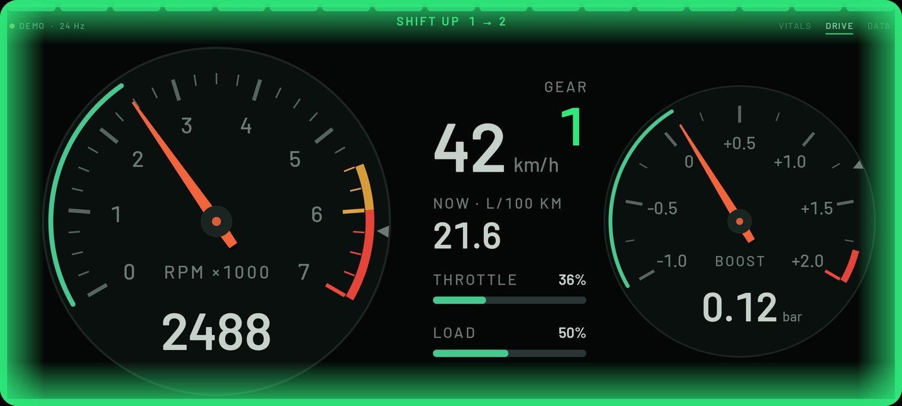
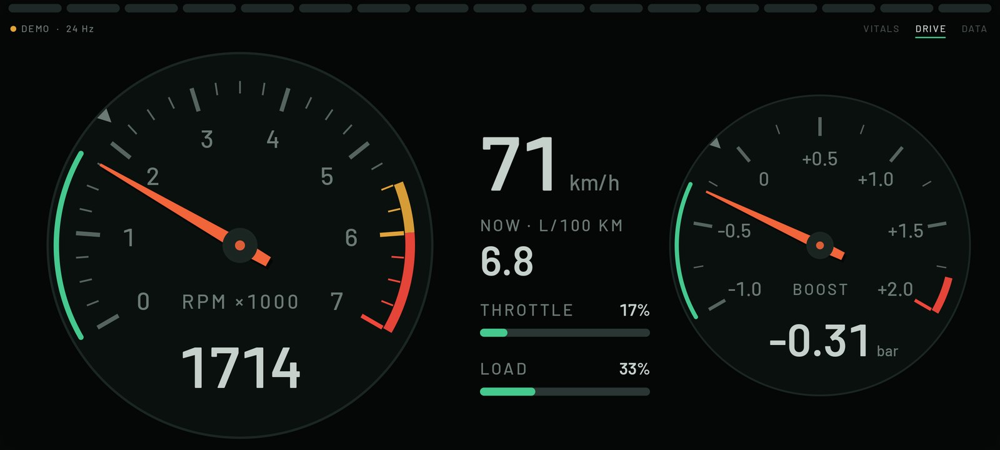
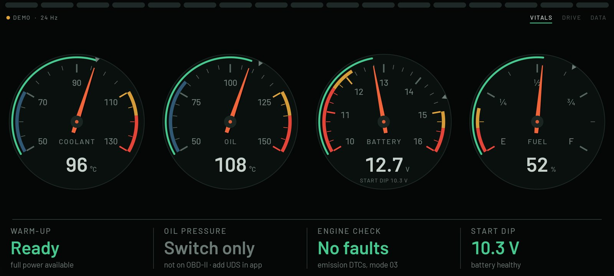
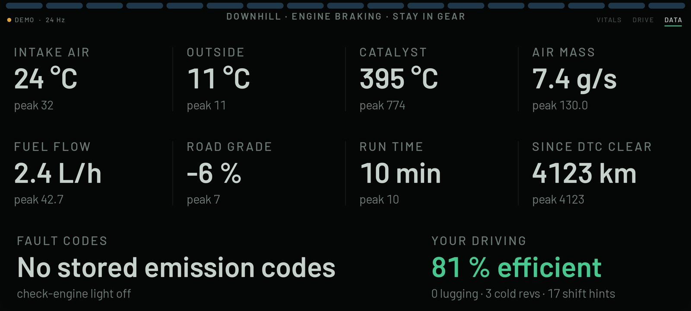
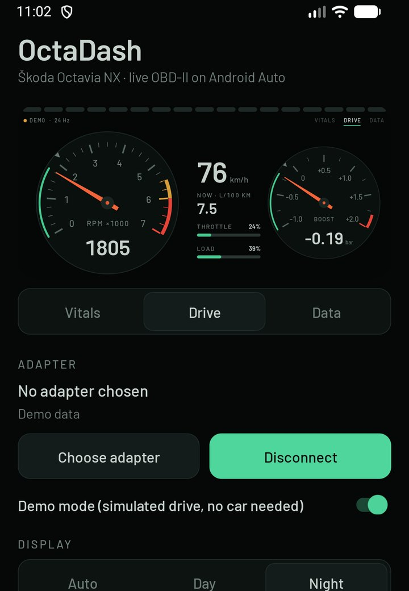

Analogue gauges for revs, boost, temperatures and battery on your car's screen. The whole screen border glows green when it's time to change gear, so you see it from the corner of your eye.

The moment to shift: amber while you approach, then the border strobes green. Hold the revs and it goes dark after 2.5 s.
Everything is drawn for a glance: big numbers, a needle with real inertia, and colour only when something needs your attention.
The side edges glow amber as you approach the efficient shift point, then the whole border flashes green when it is time to shift. If you hold the revs steady it goes dark after 2.5 s, and accelerating another 100 rpm lights it again.
The shift point moves with load and road grade. It never asks for a shift that would lug the next gear, and it learns your gear ratios as you drive.
Amber when you're lugging or revving cold oil, plus a warm-up coach. Blinking red for low oil pressure if you add the UDS channel.
Vitals: coolant, oil, battery, fuel. Drive: rev counter, speed, gear, boost, consumption. Data: everything else plus fault codes.
If the car doesn't report a value, OctaDash says not reported. It never shows a made-up number.
It follows the car's headlight signal. The night palette has no pure white, so nothing glares in the windscreen.
Captured from the app in demo mode, which simulates a drive so you can try it without a car.




Set up the adapter and engine once. After that, the car screen connects by itself.
You need an ELM327-compatible Bluetooth OBD-II adapter (Classic or BLE) plugged into the car.
The app is not from the Play Store, so Android Auto hides it until you change a few settings. Work through these in order.
Android Auto reads its app list only when it starts. After you enable Unknown sources or install an update, go to Settings → Apps → Android Auto → Force stop, then reconnect the car. If that doesn't help, also use Storage → Clear cache.
Android Auto settings → Customise launcher. OctaDash must be ticked. You can also move it to the first page there.
On Android 10 and newer, Android Auto is built in, but it can be an empty placeholder until you update it from the Play Store. The in-app Android Auto check tells you if yours is one.
Android Auto can't see apps in a Work profile, Secure Folder or dual-app space. Install OctaDash in your normal profile.
Open OctaDash on the phone. A red card with Copy report appears at the top. Send that text and it shows exactly what failed.
Android Auto lets only navigation apps draw their own graphics; every other app gets fixed lists. Real analogue needles need that freedom.